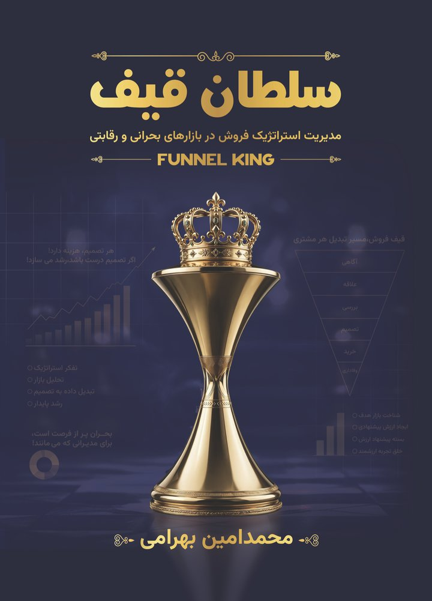

- خانه
- کتاب سلطان قیف
سلطان قیف Funnel King
مدیریت استراتژیک فروش در بازارهای بحرانی و رقابتی
راهنمای عملی طراحی قیف فروش، افزایش نرخ تبدیل، کاهش هزینهی جذب مشتری و ساخت سیستم فروش پایدار برای کسبوکارها.

سلطان قیف فقط یک کتاب فروش نیست!
نقشهای برای ساختن یک ماشین رشد پایدار است. در بازاری که هر روز با بحران، رقابت و بیثباتی روبهروست، بقا کافی نیست؛ باید سیستم ساخت. این کتاب عصارهی تجربههای میدانی، تحلیل دادههای واقعی و طراحی قیفهایی است که در بازار ایران واقعاً کار میکنند.
فروش به فروشندهی خوب وابسته است
با رفتن یک نفر، نیمی از فروش هم میرود.
تبلیغات بیشتر، سود کمتر
بودجهی بیشتر فقط ریزش را بزرگتر کرده است.
مشتری یکبار میخرد و نمیماند
بعد از خرید، هیچ سیستمی برای وفادارسازی نیست.
فهرست کتاب: ۱۱ بخش، از DNA استراتژی تا ابزارهای اجرا
- پیشگفتارصفحهی ۴
- پیشدرآمد و قرارداد خواندنصفحهی ۱۱
- DNA تفکر استراتژیکصفحهی ۱۷
- بازیِ بازار: نیروها، بازیگران، قواعدصفحهی ۵۱
- مهندسی قیف بهعنوان موتور رشدصفحهی ۹۴
- محصول و ارزش پیشنهادی: ساختن چیزی که میماندصفحهی ۱۳۳
- مدل کسبوکار و پولصفحهی ۱۶۵
- عملیات و ظرفیتصفحهی ۲۰۵
- سازمان، تصمیمگیری و اجراصفحهی ۲۳۷
- استراتژی ورود به بازار (GTM)صفحهی ۲۵۳
- بحران، ضدشکنندگی و بازیهای قدرتصفحهی ۲۷۹
- روایت آموزشیِ «سلطان قیف»؛ بازی واقعی رشدصفحهی ۳۲۱
- دستور کارها، تمرینها و ابزارهاصفحهی ۳۲۷
فصل اول را رایگان بخوانید
اگر قرار باشد تمام مدیریت استراتژیک را در یک جمله فشرده کنیم، شاید این جمله از همه دقیقتر باشد:
استراتژی یعنی تصمیم گرفتن زیر فشار، با منابع محدود، در شرایطی که نمیتوان همه گزینههای خوب را همزمان داشت.
بیشتر آدمها استراتژی را با برنامهریزی بلندمدت اشتباه میگیرند. بعضیها هم آن را با بلندپروازی یکی میدانند. عدهای تصور میکنند استراتژی همان فایل پاورپوینتی است که سالی یکبار در جلسه مدیران ارائه میشود؛ پر از فلش، دایره، نمودار، کلمات بزرگ و جملههای الهامبخش.
اما در دنیای واقعی، استراتژی هیچکدام از اینها نیست.
استراتژی یعنی وقتی با پنج فرصت جذاب، سه تهدید واقعی، بودجه محدود، تیم ناقص، زمان کم و بازاری نامطمئن روبهرو هستی، بتوانی تصمیم بگیری…
برای مدیرانی که فروش را سیستم میخواهند، نه شانس
- صاحبان کسبوکار و مدیران فروش
- تیمهای فروش B2B و B2C
- بازاریابهایی که میخواهند اثر کارشان را اندازه بگیرند
- ارسال به سراسر ایران
- امضای نویسنده (به درخواست)
- دسترسی به قالبهای قیف فروش
دربارهی کتاب
کتاب برای چه سطحی نوشته شده؟
برای مدیران و صاحبان کسبوکار؛ بدون نیاز به دانش تخصصی بازاریابی.
نسخهی الکترونیکی دارد؟
بله. نسخهی الکترونیکی کتاب ۸۵۰٬۰۰۰ تومان است و از funnelking.ir قابل خرید است.
میتوانم قبل از خرید بخشی از کتاب را بخوانم؟
بله. متن کامل بخش اول همراه با بوم Strategic DNA رایگان در دسترس است.
کتاب با مشاوره قیف فروش چه ارتباطی دارد؟
کتاب متد را توضیح میدهد؛ در مشاوره، همان متد روی دادههای کسبوکار شما پیاده میشود.
میخواهید قیف فروش شما را با هم بسازیم؟
متد کتاب، روی دادههای واقعی کسبوکار شما.